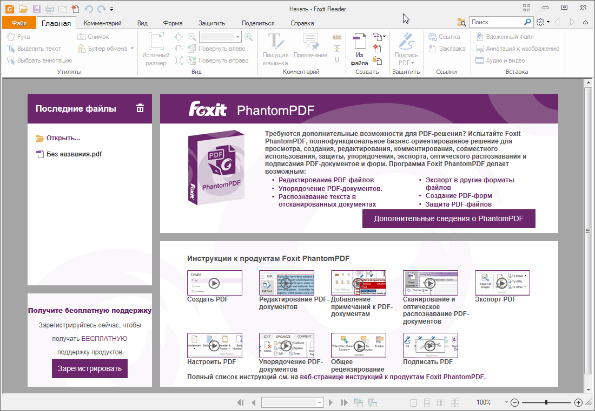
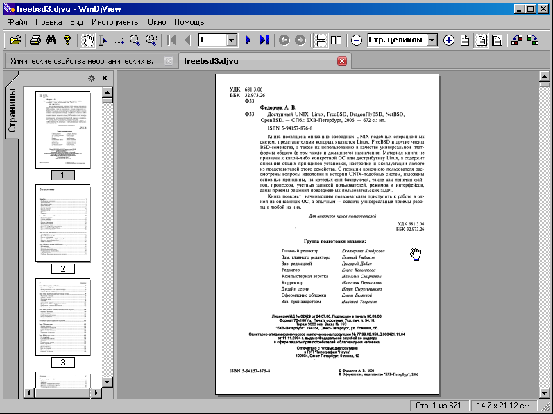
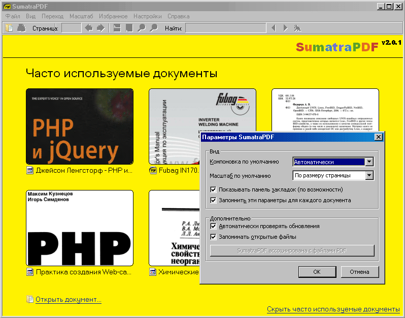

Отсутствие встроенных средств для открытия распространённых форматов файлов – это вечная проблема Windows. Пользователи OS X и большинства дистрибутивах Linux без проблем открывают pdf и другие распространённые форматы. Microsoft же добавила приложение для открытия pdf только в Windows 8 и только в полноэкранном режиме. В Windows 10 наконец-то научился удобно открывать pdf встроенным браузером. Встроенной поддержки DjVu мы скорее всего не увидим и если вы не знаете чем открыть DjVu, читайте дальше
Родная программа для просмотра pdf – это Adobr Reader. Он идеально справляется с просмотром любых pdf документов. Есть дополнительные инструмент: штамп, комментарии и другие за плату. Недостаток его в том, что он довольно громоздкий и постоянно скачивает обновления, не спрашивая пользователя. К счастью альтернатив существует немало.
C некоторых пор браузеры Google Chrome и Mozilla Firefox получили поддержку pdf. Очень удобно, если вы не хотите ставить лишних программ. Все браузеры на основе движка Google Chrome (Opera, Яндекс браузер) также открывают pdf
Foxit Reader – популярная альтернатива Adobe Reader. Некогда эта программа была очень компактна и быстра, но в последнее время сильно разжирела и стала весить даже больше, чем Adobe Reader. В новых версиях Foxit Reader научился создавать pdf и добавлять туда комментарии. В целом не самая лучшая альтернатива
[br-clear]
WinDjView программа для просмотра файлов djvu, основанная на свободной библиотеке DjVuLibre. Высокая скорость работы и маленький размер дистрибутива принесли ей заслуженную популярность. Есть вариант под OS X, называется MacDjView и доступен на той же странице, что и Windows версия.
[br-clear]
STDU Viewer – это универсальная программа, которая открывает файлы в форматах PDF, DjVu, xps, fb2 и др. Всеядность, бесплатность и очень скромный размер сделали STDU очень удобной программой. Запускается STDU Viewer практически мгновенно, но с PDF работает не так быстро, как другие. Программа умеет разрезать документ на странички-картинки.[br-clear]
Sumatra PDF – это самая быстрая из всех рассмотренных программ. Весит меньше 5 Мб. Не тормозит даже при открытии больших файлов. Прокрутка тоже работает очень быстро. Поддерживаются форматы PDF, XPS, DjVu, CHM и другие. Настроек практически нет. При запуске показываются последние открытые документы в стиле браузера Chrome. Вкладки не поддерживаются, последняя доступная версия поддерживает вкладки.[br-clear]
В Windows 10 появился новый браузер, который умеет открывать pdf файлы. Работает быстро, функций никаких нет. Доступен только в Windows 10.[br-clear]
А какие программы для просмотра электронных документов используете вы?
{kind=link}
{kind=link}
{kind=link}
{kind=link}
{kind=link}